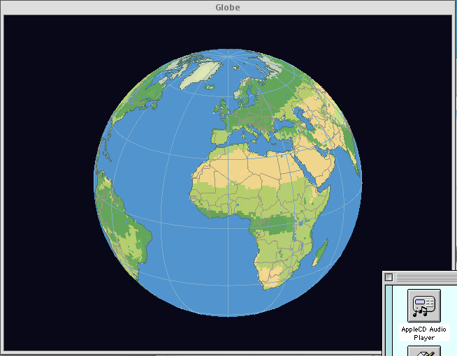
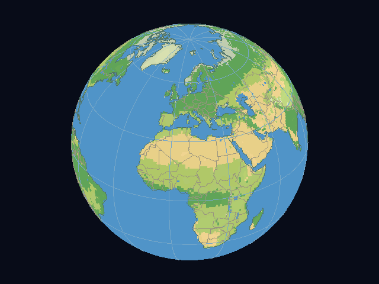
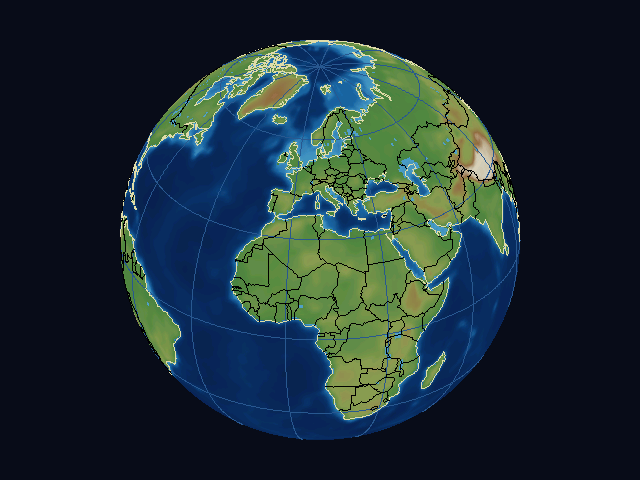

Explore the globe


- Drag to turn the globe. Double-click to zoom. Click a country or city to see its information card.
- Switch between Map and Relief to see biomes or elevation. Press D for the night side.
- Press M and click two points to measure the distance.
Installation
PowerPC Mac · tested on Mac OS 9.2.2 · 24 MB app memory (12 MB minimum).
- Open the .sit file with StuffIt Expander.
- Copy the folder to your hard disk and open Poodle Earth.
See the Classic ReadMe for all the controls and troubleshooting.
About the map
This preview uses simplified coastlines and borders and a limited set of cities. Some places, including San Marino and Paris, are missing.
Some territories, such as Puerto Rico, can be selected separately. Borders and selectable areas reflect the data bundled with the atlas. They do not imply a position on sovereignty or recognition.
Platforms
The current download is for Mac OS 9 on PowerPC. You can also build from source for NetBSD with X11.